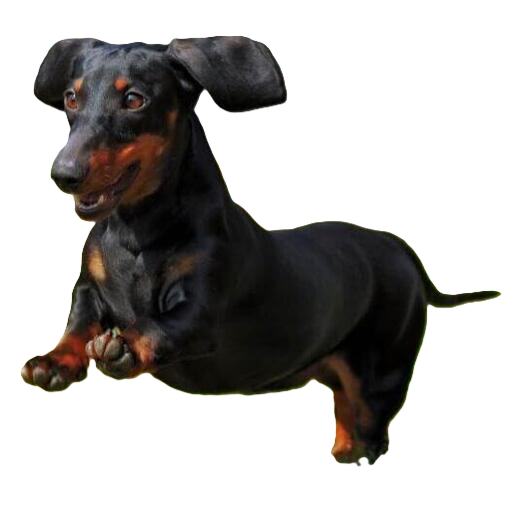

Week of Apr 21-26
Razas Famosas


Dachshund
El dachshund, también conocido como perro salchicha o teckel, es una raza de perro originaria de Alemania. Su peculiar fisonomía se debe a una mutación genética conocida como bassetismo, que dota a los ejemplares de unas extremidades cortas en relación con el tamaño del cuerpo.
